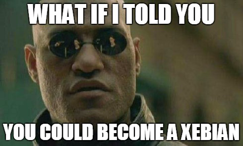

Good Work!

Les défis ne vous font pas peur et c’est l’une des principales qualités de nos Xebians !
Vous avez déjà utilisé une base distribuée et souhaitez étendre vos connaissances ?
Vous avez envie de vous casser la tête pour choisir entre une base relationnelle, orientée graphes ou
orientée colonnes ? Vous hésitez entre MongoDB et Cassandra pour choisir entre CA, AP ou PC ?
Vous avez envie d’une mission où la distribution des données, la réplication et le stockage en
mémoire seront les problématiques principales ? Alors devenez Xebian !
Chez nous, être ingénieur(e) NoSQL c'est :
- Des missions sur mesure.
- Participer au mercredi de la Data pour débattre et apprendre avec vos pairs Xebians.
- Participer à des meetups tels que Cassandra User Group ou MongoDB User Group.
- Speaker à des conférences de renommées telles que Devoxx pour partager vos
connaissances.
Faîtes un tour sur notre blog et sur la presse comme Programmez (article Cassandra : débutez avec les bases NoSQL) pour en savoir plus !
Prêt(e) à tenter l’aventure ?